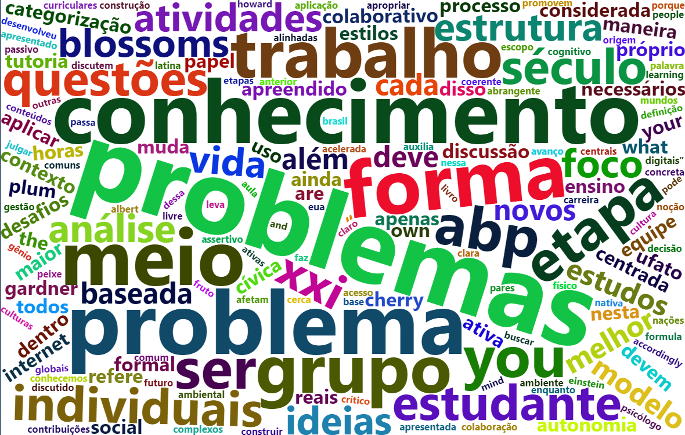

O modo de vida contemporâneo está passando por mudanças estruturais, em diferentes dimensões. Parte dessas mudanças está ocorrendo em função da revolução tecnológica que permite interações entre os meios físico, biológico e digital, denominada Quarta Revolução Industrial (Schwab, 2017; Susskind e Susskind, 2015). Como resultado, diferentes competências funcionais e específicas estão sendo demandadas para atuação de egressos de instituições de ensino superior (IES) (Elmor Filho et al., 2019; Susskind e Susskind, 2015), a saber (i) competências funcionais: capacidade de geração e aplicação do conhecimento, superação de desafios, tomada de decisão, treinamento e preceptoria; e (ii) competências específicas: capacidade de concepção, inovação, análise e síntese, gestão, aplicação de métodos para caracterização e solução de problemas e a capacidade de relacionar o conhecimento apreendido de maneira transdisciplinar. As instituições de ensino superior (IES) enfrentam o desafio de se adequar a essas demandas. Para tanto, é necessário transformar a sala de aula em um ambiente que estimule o protagonismo do estudante, o desenvolvimento de autonomia permanente de aprendizagem e favoreça comportamentos proativos e adaptáveis nas atividades profissionais.
Além dessa necessidade de transformação do ensino para adaptação às mudanças supracitadas, no início deste ano nos deparamos com um novo e imediato desafio advindo das relações humanas com o ambiente natural: a pandemia provocada pela disseminação do novo coronavírus SARS-CoV-2 em escala global. Esse fenômeno resultou na implementação de distanciamento social, mudando de maneira significativa a forma como vivemos. A educação é uma das diversas atividades impactadas pela pandemia e o contato presencial no ambiente escolar está restrito devido ao distanciamento social. Assim, os colaboradores das IES precisam buscar formas de manter a interação entre discentes e docentes, mesmo que virtual, qualificando o processo de aprendizagem para as competências necessárias ao do mundo contemporâneo.
Dentre as dimensões de desafios que gestores públicos, profissionais, instituições privadas e cidadãos estão enfrentando para adaptação às mudanças provocadas pelo COVID-19, estão a estrutura econômica, a dinâmica urbana, os padrões de consumo, os deslocamentos, a liberdade dos indivíduos, a percepção de felicidade, a degradação do meio ambiente e as priorizações de atividades e escolhas cotidianas. O papel da universidade, além da formação de capital humano para os desafios contemporâneos, envolve a produção e transferência de conhecimento e pensamento crítico sobre problemas reais, com o objetivo de promoção de qualidade de vida para as pessoas. Nesse momento disruptivo, justifica-se esse projeto de ensino pela necessidade de formar capital humano, por meio de ambiente virtual, capaz de discutir processos sociais, econômicos e ambientais no contexto urbano atual.
Diante do contexto de distanciamento social imposto pela pandemia da Covid-19, o CEFET-MG adotou o Ensino Remoto Emergencial (ERE) como forma de promover a reaproximação entre a instituição e seus alunos, instituindo as atividades didático-pedagógicas não presenciais pelo tempo que se fizer necessário.
O ERE pode ser compreendido como “um conjunto de estratégias didático-pedagógicas mediadas ou não por tecnologias digitais” (CEFET, 2020). Entende-se por “remoto” o distanciamento geográfico, no caso, imposto pelo quadro de contágio da Covid-19. O caráter emergencial deve ser compreendido na sua excepcionalidade, por um lado, por se tratar de uma medida que, em caráter de urgência, procura minimizar o impacto da pandemia na formação acadêmica de nossos estudantes e por outro, devido à sua temporalidade, restrito ao tempo em que estivermos sobre restrições sanitárias que impeçam o retorno normal e presencial das atividades acadêmicas.
Além dos desafios objetivos impostos pela pandemia SARS-CoV-2, o mundo como conhecemos está em acelerada e abrangente mudança. O avanço tecnológico, materializado por meio da internet, da realidade aumentada, da inteligência artificial, da internet das coisas, dentre outros adventos, tem promovido possibilidades de aprendizagem, ação, interação e solução de problemas reais de maneira criativa e efetiva. Ainda, a estrutura econômica atual está sendo modificada, por meio de novas relações de produção e trabalho. Essas mudanças são fruto da quarta revolução industrial estruturada por meio do uso de tecnologia para convergência entre os mundos físico, digital e biológico. Trata-se de um processo de transformação que beneficiará apenas os indivíduos e as sociedades que forem capazes de inovar e se adaptar.
Essas mudanças afetam diretamente o modelo de educação formal mais presente no Brasil. Intitulados como “nativos digitais” ou “Millennials”, crianças e jovens nascidos após a década de 1980, não conhecem o mundo sem tecnologia. O livre acesso à informação faz com que o modelo tradicional de ensino, com aulas expositivas para apresentação do conteúdo formal, não seja mais necessário. O modelo educacional deve buscar a etimologia latina da palavra “educar”, que se refere a liderar de forma a extrair o melhor que cada um tem dentro de si. O foco deve ser no indivíduo e na sua capacidade e autonomia de aprendizagem e desenvolvimento de competências.
As habilidades, o conhecimento e as competências são necessários para o sucesso pessoal e profissional. Algumas diretrizes gerais para formação no século XXI:
Utilizar habilidades para solucionar problemas reais e globais Aprender e trabalhar de forma cooperativa em um contexto de diferentes culturas, religiões e modo de vida. Respeitar mutuamente as diferenças, mantendo diálogo aberto nos contextos pessoal, profissional e social. Entender a cultura de outras nações, inclusive daquelas cujas línguas diferem da materna. De maneira sintética, as competências necessárias ao profissional no século XXI são apresentadas na Tabela 1.
Tabela 1: Competências no século XXI
| Aprendizagem e inovação | Informação e tecnologia | Carreira e vida pessoal e social |
|---|---|---|
| Criatividade e inovação | Acesso à informação | Flexibilidade e adaptabilidade |
| Pensamento crítico e solução de problemas complexos | Adaptação às mudanças tecnológicas | Iniciativa e direcionamento pessoal assertivo |
| Comunicação e colaboração | Colaboração e contribuições individuais | Produtividade, liderança e responsabilidade |
Para promoção dessas competências por meio da educação formal, diferentes propostas metodológicas foram desenvolvidas ao longo do tempo. Parte dessas propostas pode ser classificada como “metodologias ativas” e têm como objetivo a construção do conhecimento e não apenas a noção e memorização de conceitos e técnicas. O processo passivo de participação do estudante leva à inabilidade de aplicação do conhecimento em contexto prático. Por meio dos processos pedagógicos centrados no estudante, o sujeito constrói o próprio conhecimento de forma ativa. O papel de professores e estudantes muda significativamente nessa abordagem. O professor passa a ser professor-tutor e o estudante o ator principal no processo de aprendizagem. Além disso, os estudantes desenvolvem capacidade de análise sistêmica de problemas e conseguem aplicar o que aprenderam com maior assertividade e visão sistêmica, com foco na solução dos problemas na atividade profissional.

If you see mistakes or want to suggest changes, please create an issue on the source repository.